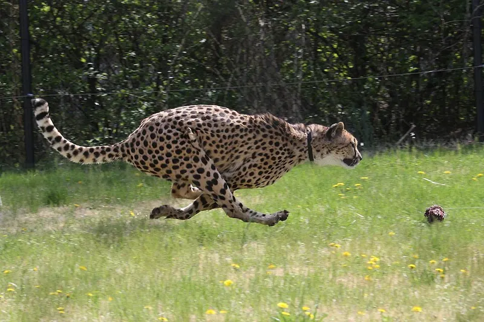

Cambridge Lower Secondary · Science 0893 · Stage 8
Speed and Distance–Time Graphs
How to calculate speed, distance and time, find average speeds, and read, draw and interpret distance–time graphs — with worked examples and a Checkpoint-style quiz.
British & IGCSE › Checkpoint 8 › Checkpoint 8 Science — Complete Course
- Calculate speed using speed = distance ÷ time, and rearrange it to find distance or time. (8Pf.01)
- Read and explain simple distance–time graphs, and draw them from data. (8Pf.02)
1. Key words
| Word / phrase | Meaning / use |
|---|---|
| speed | السرعة — how far something travels in each second (or hour) |
| distance | المسافة — how far something travels, in m or km |
| time | الزمن — how long the journey takes, in s, min or h |
| average speed | السرعة المتوسطة — total distance ÷ total time for the whole journey |
| constant speed | سرعة ثابتة — the same distance is covered every second |
| stationary | ساكن / واقف — not moving |
| accelerate | يتسارع — speed up |
| decelerate | يتباطأ — slow down |
| distance–time graph | منحنى المسافة والزمن — a graph of distance (up) against time (across) |
| gradient | الميل — how steep a line is; on a distance–time graph it gives the speed |
| metres per second (m/s) | متر لكل ثانية — the SI unit of speed |
2. What is speed?
Speed tells you how fast something is moving: how much distance it covers in each unit of time. A car moving at 20 m/s travels 20 metres every second. To find a speed you need two measurements: the distance travelled and the time taken.
speed = distance ÷ time (in symbols: s = d ÷ t)
| If distance is in… | and time is in… | speed is in… |
|---|---|---|
| metres (m) | seconds (s) | metres per second (m/s) — the SI unit |
| kilometres (km) | hours (h) | kilometres per hour (km/h) — used for cars and trains |
| centimetres (cm) | seconds (s) | centimetres per second (cm/s) — for small, slow things |
Rearranging. You can use the same three quantities to find distance or time. The formula triangle helps: cover the quantity you want and the triangle shows the calculation.
| To find… | Use… | Example |
|---|---|---|
| speed | speed = distance ÷ time | 300 m in 60 s → 300 ÷ 60 = 5 m/s |
| distance | distance = speed × time | 5 m/s for 60 s → 5 × 60 = 300 m |
| time | time = distance ÷ speed | 300 m at 5 m/s → 300 ÷ 5 = 60 s |
3. Units: change them first
Before you calculate, make the units match. If the question asks for m/s, the distance must be in metres and the time in seconds.
- 1 km = 1000 m (km → m: × 1000)
- 1 minute = 60 s (minutes → seconds: × 60)
- 1 hour = 60 minutes = 3600 s
- 30 minutes = 0.5 h; 15 minutes = 0.25 h; 20 minutes = 1/3 h
4. Average speed
Real journeys are never at one steady speed: cars stop at traffic lights and speed up again. Average speed treats the whole journey as if it were at one steady speed:
average speed = total distance travelled ÷ total time taken — the total time includes any time spent stopped.
A speedometer shows the speed at one instant. An average speed can be much lower, because of the stops.
Measuring speed in the laboratory. To find the speed of a toy car: mark a start and a finish line a measured distance apart (for example 2.00 m, with a metre rule or tape measure); time the car between the lines with a stopwatch; repeat three times and calculate a mean time; then speed = distance ÷ mean time. Human reaction time makes stopwatch timings less accurate, especially for short times — light gates connected to a timer are more accurate.
- السرعة = المسافة ÷ الزمن. المسافة = السرعة × الزمن. الزمن = المسافة ÷ السرعة.
- قبل ما تحسب، وحّد الوحدات: كيلومتر × 1000 = متر، دقيقة × 60 = ثانية.
- السرعة المتوسطة = المسافة الكلية ÷ الزمن الكلي — وده بيشمل وقت الوقوف كمان.
5. Distance–time graphs
A distance–time graph shows a journey as a picture. Time goes along the horizontal axis (x-axis) and distance goes up the vertical axis (y-axis). The shape of the line tells you how the object is moving.
| Shape of the line | What it means |
|---|---|
| horizontal (flat) line | stationary — distance is not changing |
| straight sloping line | constant speed |
| steeper straight line | faster constant speed |
| curve getting steeper | speeding up (accelerating) |
| curve getting flatter | slowing down (decelerating) |
| line sloping down (on a 'distance from start' graph) | moving back towards the start |
The gradient is the speed. For a straight section, speed = (change in distance) ÷ (change in time). Draw a right-angled triangle under the line, read the distance it rises and the time it covers, and divide.
- Start to A: the line slopes up steadily — constant speed. Speed = 100 m ÷ 20 s = 5 m/s.
- A to B: the line is flat — the cyclist is stationary for 30 − 20 = 10 s.
- B to C: steeper — faster. Speed = (300 − 100) m ÷ (50 − 30) s = 200 ÷ 20 = 10 m/s.
- C to D: flat — stationary again.
- Average speed for the whole 60 s = 300 m ÷ 60 s = 5 m/s.
6. Drawing a distance–time graph
- Put time on the x-axis and distance on the y-axis (time is the independent variable).
- Label each axis with the quantity and the unit, e.g. "time in s", "distance in m".
- Choose a simple, even scale (1, 2, 5 or 10 per square) that uses more than half of the grid. Start both axes at 0.
- Plot each point accurately with a small cross (×).
- Join the points with straight lines using a ruler if the object moves at steady speeds; draw a smooth curve if the speed is changing.
- الخط الأفقي = الجسم واقف. الخط المايل المستقيم = سرعة ثابتة، وكل ما يكون أميل (أشد انحدارًا) تكون السرعة أكبر.
- المنحنى اللي بيزيد ميله = بيسرّع، واللي ميله بيقل = بيبطّأ.
- السرعة من الرسم = فرق المسافة ÷ فرق الزمن (مش القراءة نفسها).
7. Worked examples
Worked example 1 — A cheetah runs 210 m in 7 s. Calculate its speed. [2]
- Write the formula: speed = distance ÷ time.
- Substitute: speed = 210 ÷ 7.
- Answer with unit: 30 m/s.
- Common mistake: writing 7 ÷ 210 = 0.033. Always distance on top.

Worked example 2 — A car moves at a constant 25 m/s for 40 s. How far does it travel? [2]
- distance = speed × time
- = 25 × 40
- = 1000 m (or 1 km)
Worked example 3 — An aeroplane flies 2400 km at an average speed of 800 km/h. How long does the flight take? [2]
- time = distance ÷ speed
- = 2400 ÷ 800
- = 3 hours (the units km and km/h give hours)
Worked example 4 — Layla walks 900 m in 12 minutes. Calculate her average speed in m/s. [3]
- Convert the time: 12 minutes × 60 = 720 s (1).
- speed = 900 ÷ 720 (1)
- = 1.25 m/s (1)
- Common mistake: 900 ÷ 12 = 75 — that is 75 metres per minute, not m/s.
Worked example 5 — Use the cyclist graph in section 5. (a) Describe the motion between A and B. [1] (b) Which part of the journey is fastest? Explain how you can tell. [2]
- (a) The cyclist is stationary (stopped) for 10 s — the line is horizontal.
- (b) B to C (1), because that line is the steepest (1). (Check: 10 m/s compared with 5 m/s.)
Worked example 6 — A ball rolls down a slope. Its distance–time graph is a curve that gets steeper. Then it rolls along a flat floor and its graph becomes a curve that gets flatter until it is horizontal. Describe the motion. [3]
- Down the slope: the ball is speeding up (the line gets steeper) (1).
- On the floor: the ball is slowing down (the line gets less steep) (1)…
- …until it stops (horizontal line) (1).
- Dividing the wrong way: speed = distance ÷ time, never time ÷ distance.
- Mixing units: km with seconds, or minutes when the answer must be in m/s. Convert first.
- Forgetting the unit, or writing the wrong one (m/s for speed, m for distance, s for time).
- Leaving out the stopped time when working out an average speed.
- Reading values instead of changes: for a section of a graph, use (distance at end − distance at start) ÷ (time at end − time at start).
- Thinking a horizontal line means "constant speed". Flat means not moving.
- Drawing a 'dot-to-dot' freehand line or a curve through points that lie on a straight line — use a ruler.
- Calculate a speed, distance or time — write the formula, substitute, answer, unit. Each step can earn a mark.
- Average speed for a journey in stages, often with a stop and a change of units.
- Read a graph: distance at a time, how long the object stopped, which part is fastest.
- Calculate speed from a graph section using changes in distance and time.
- Describe a section of a graph: stationary / constant speed / speeding up / slowing down / returning.
- Plot a distance–time graph from a table: labelled axes with units, even scale, accurate points, ruler lines.
- Method: how to measure speed (distance with a metre rule or tape, time with a stopwatch or light gates, repeat and average).
Practice
- speed = distance ÷ time; distance = speed × time; time = distance ÷ speed.
- Make units match before you calculate: m and s give m/s; km and h give km/h.
- Average speed = total distance ÷ total time, including stops.
- On a distance–time graph: flat = stationary, straight slope = constant speed, steeper = faster, curves = speeding up or slowing down.
- Speed from a graph = change in distance ÷ change in time.
All pages in this course
Start here
- Stage 8 Science: The Tests and How to Prepare
- Thinking and Working Scientifically: Models, Investigations and Analysing Results
Biology
- Joints and Antagonistic Muscles
- Blood and Its Components
- Breathing, Gas Exchange and Diffusion in the Lungs
- A Balanced Diet, Energy Stores and Lifestyle
- Aerobic Respiration
- Ecosystems, Bioaccumulation and Invasive Species
Chemistry
- The Structure of the Atom
- Purity, Concentration and Chromatography
- Word Equations, Exothermic and Endothermic Reactions
- The Reactivity of Metals
- Impure Products and Solubility of Salts
Physics
- Speed and Distance–Time Graphs
- Balanced and Unbalanced Forces, and Moments
- Pressure, Particles and Diffusion
- Reflection and Refraction
- Dispersion and Colour
- Magnetic Fields and Electromagnets
Earth and space
- The Earth's Magnetic Field and Earth's Resources
- Climate, Weather and Climate Change
- Galaxies and Asteroids
Practice tests